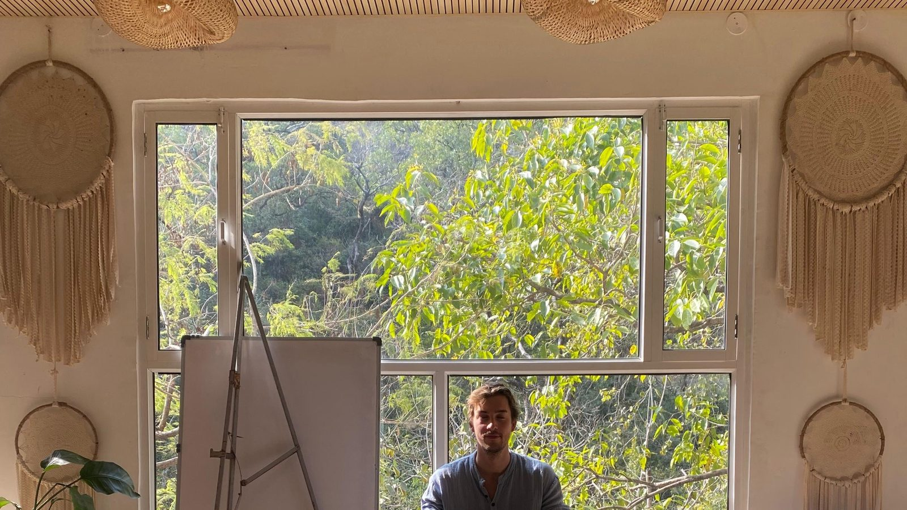

Book a Session
Pick a time that works for you and we'll take it from there.
Ready when you are
Click below to see open times and book directly through Calendly.
See Available TimesOr find me on Instagram @followingbreath
Good to know
Connected Breath, pranayama, yoga, and meditation are usually held online, all you need is a quiet space and a stable internet connection. Rebirthing Breathwork is the one exception, from a single session through the full Transformation Series, it's held in person only, at locations depending on where I'm currently based or traveling. Get in touch to check current availability near you. If this is your first time, mention that when you book so the session can be paced accordingly.

Frequently Asked
Do I need any experience?
No. Every session, including the Connected Breath Session, is open to complete beginners.
What do I need for an online session?
A quiet, private space where you can lie or sit comfortably, a stable internet connection, and a bit of room to move if needed. A yoga mat or cushion helps but isn't required.
Is rebirthing breathwork safe?
It's a more intense practice, which is why those sessions are kept small (3–4 people), held in person only, and closely guided. There's also a short list of health conditions to be aware of on the Offers page, so have a look there and let me know about any relevant conditions when you book.
Why is Rebirthing Breathwork in person only?
It's intense enough, and can bring up enough, that it needs direct, in-person supervision to be safe, right from the very first session, not just once you reach the full series. Being physically together also allows for closer, more responsive guidance, and a level of safety that's hard to fully recreate on a screen. Connected Breath, pranayama, yoga, and meditation on the Offers page are still available online if that works better for you.
Can I book a group session?
Yes, group sessions are available for most offers. Mention your group size when you reach out and we'll find a fit.